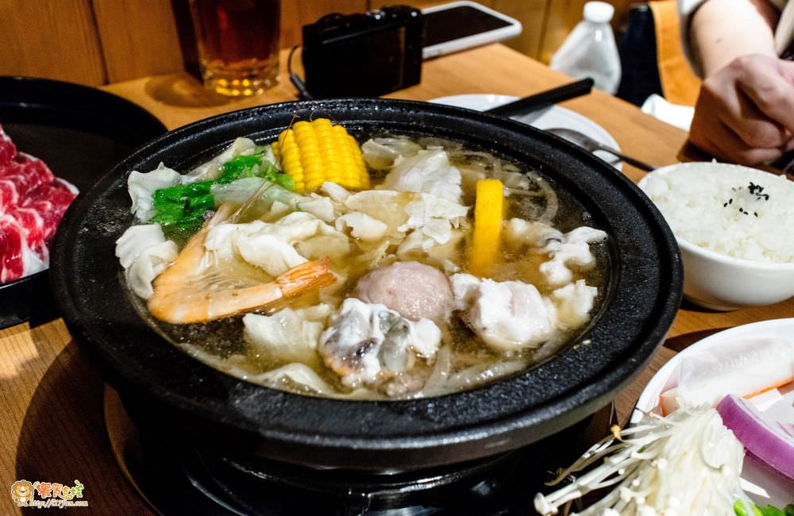
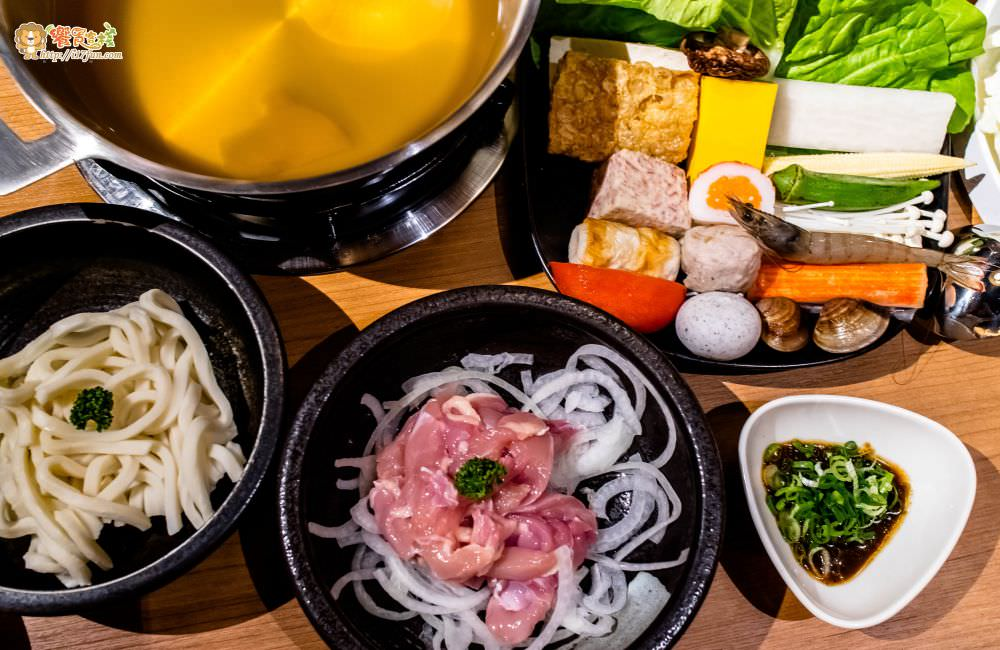
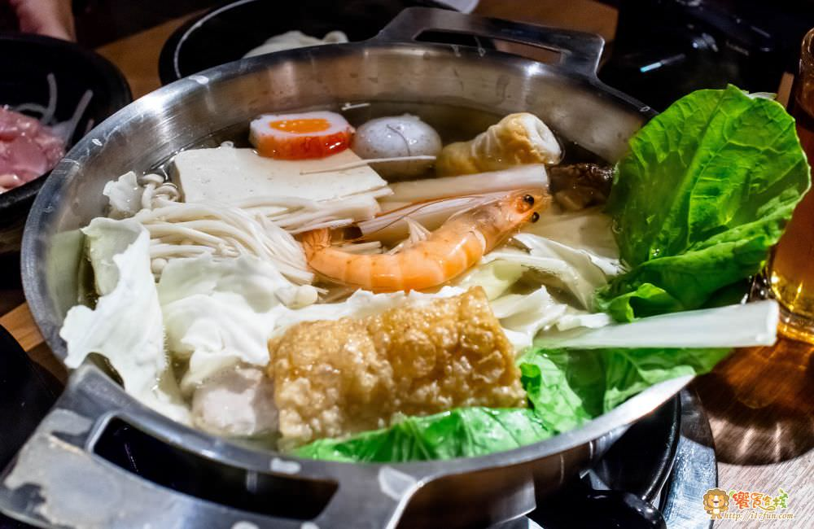

不輸吃到飽的超划算大肉盤!經典爆香味石頭火鍋
找高C/P值的火鍋不一定只有火鍋吃到飽店
最新推出超大肉肉盤，50片肉只要350元！！
更不用說用洋蔥爆香過的鮮甜湯頭
是火鍋控們一年四季都可以來的好地方！！

夏天就是要這一味！讓人想要吃火鍋
湯頭可說是火鍋的的基礎，光有好喝的湯頭至少就贏一半以上
越喝越回甘的味道！
只要給小泡菜一碗白飯，再配上火鍋肉、蔬菜，整個就可以吃得超開心。
可針對食量大的家庭，也可以加點巨無霸的肉片，分別有梅花豬與牛肉片2種
超過30盎司的重量，比一斤的牛肉還重，光這樣捧著就非常有感！
